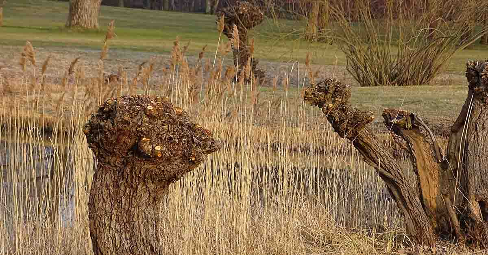

October 23, 2019
Among the many useful discoveries, which this age hath made, there are very few which, better deserve the attention of the public than what I am going to lay before your Lordship.
There is a bark of an English tree, which I have found by experience to be a powerful astringent, and very efficacious in curing aguish and intermitting disorders.
About six years ago, I accidentally tasted it, was surprised at its extraordinary bitterness; which immediately raised me a suspicion of its having the properties of the Peruvian bark. As this tree delights in a moist or wet soil, where agues chiefly abound, the general maxim, that many natural maladies carry their cures along with them; or that their remedies lie not far from their causes, was so very apposite to this particular case, that I could not help applying it; and that this might be the intention of Providence here, I must own had some little weight with me.
The excessive plenty of this bark furnished me, in my speculative disquisitions upon it, with an argument both for and against the imaginary qualities of it; for, on one hand, as intermittents are very common, it was reasonable to suppose, that what was designed for their cure, should be as common and as easy to be procured. But then, on the other hand, it seemed probable, that, if there was any considerable virtue in this bark, it must have been discovered from its plenty. My curiosity prompted me to look into into the dispensatories and books of botany, and examine what they said concerning it; but there it existed only by name. I could not find, that it hath, or ever had, any place in pharmacy, or any such qualities, as I suspected ascribed to it by the botanists.
However, I determined to make some experiments with it; and, for this purpose, I gathered that summer near a pound weight of it, which I dryed in a bag, upon the outside of a baker’s oven, for more than three months, at which time it was to be reduced to a powder, by pounding and sifting after the manner that other barks are pulverized.
It was not long before I had an opportunity of making a trial of it; but, being an entire stranger to its nature, I gave it in very small quantities, I think it was about twenty grains of the powder at a dose, and repeated it every four hours between the fits; but with great caution and the strictest attention to its effects: the fits were considerably abated, but did not entirely cease. Not perceiving the least ill consequences, I grew bolder with it, and-in a few days encreased the dose to two scruples, and the ague was soon removed.
It was then given to several others with the same success; but I found it better answered the intention, when a dram of it was taken every four hours in the intervals of the paroxisms.
I have continued to use it as a remedy for agues and intermitting disorders for five years successively and successfully. It hath been given I believe to fifty persons, and never failed in the cure, except in a few autumual and quartan agues, with which the patients had been long and severely afflicted; these it reduced in a great degree, but did not wholly take them off; the patient, at the usual time for the return of his fit, felt some smattering of his distemper, which the incessant repetition of these powders could not conquer : it seemed as if their power could reach thus far and no farther, and I did suppose that it would not have long continued to reach so far, and that the distemper would have soon returned with its pristine violence; but I did not stay to see the issue: I added one fifth part of the Peruvian bark to it, and with this small auxiliary it totally routed its adversary. It was found necessary likewise, in one or two obstinate cases, at other times of the year, to mix the same quantity of that bark with it; but these were cases where the patient went abroad imprudently, and, caught cold, as a post-chaise boy did, who, being almost recovered from an inveterate tertian ague, .would follow his business, by which means he not only neglected his powders, but, meeting with bad weather, renewed his distemper.
One fifth part was the largest and indeed the only proportion of the quinquina made use of in this composition, and this only upon extraordinary occasions: the patient was never prepared, either by vomiting, bleeding, purging, or any medicines of a similar intention, for the reception of this bark, but he entered upon it abruptly and immediately, and it. was always given in powders, with any common vehicle, as water, tea, small beer and such like. This was done purely to ascertain its effects; and that I might be assured the changes wrought in the patient could not be attributed to any other thing: though, had there been a due preparation, the most obstinate intermittents would probably have yielded to this bark without any foreign assistance: And, by all I can judge from five years experience of it upon a number of persons, it appears to be a powerful absorbent, astringent, and febrifuge in intermitting cases, of the same nature and kind with the Peruvian bark, and to have all its properties, though perhaps not always in in the same degree. It seems likewise to have this additional quality, viz. to be a safe medicine; for I never could perceive the least ill effect from it, though it had been always given without any preparation of the patient.
The tree, from which this bark is taken, is stiled by Ray, in his Synopsis, Salix, alba, vulgaris, the common white Willow. Haec omnium nobis cognitarum maxima est, et in satis crassam et proceram Arborem adolescit. [Google translate: This is the largest known to us all, and quite thick timber tree grows.]
It is called in these parts, by the common people, the willow, and sometimes the Dutch willow; but, if it be of a foreign extraction, it hath been so long naturalized to this climate, that it thrives as well a in it as if it was in its original soil. It is easily distinguished by the notable bitterness and the free running of its bark, which may be readily separated from it all the summer months whilst the sap is up. I took it from the shoots of three or four years growth, that sprung from Pollard trees, the diameters of which shoots, at their biggest end, were from one to four or five inches: it is possible, and indeed not improbable, that this cortex, taken from larger or older shoots, or from the trunk of the tree itself, may be stronger; but l have not had time nor opportunities to make the experiments, which ought to be made upon it. The bark, I had, was gathered in the northern parts of Oxfordshire, which are chiefly of dry and gravelly nature, affording few moist or moory places for this tree to grow in; and therefore, I suspect that its bark is not so good here as in some other parts of the kingdom. Few vegetables are equal in every place; all have their peculiar soils, where they arrive to a greater perfection than in any other place: the best and strongest Mustard-seed is gathered in the county of Durham; the finest Saffron-Flowers are produced in some particular spots of Essex and Cambridgeshire; the best Cyder-apples grow in Herfordshire, Devonshire and the adjacent counties; the roots of Valerian are esteemed most medicinal, which are dug up in Oxfordshire and Glocestershire: And therefore why may not the Cortex Salignus, or Cortex Anglicanus, have its favourite soil, Where it may florish most, and, attain to its highest perfection? It is very probable that it hath 3 and perhaps it may be in the fens of Lincolnshire, Cambridgeshire, Essex, Kent, or some such like situations; and, though the bark, which grew in the county of Oxford, may seem in some particular cases to be a little inferior to the quinquina, yet, in other places, it may equal, if not exceed it.
The powders made from this bark are at first of a light brown, tinged with a dusky yellow, and the longer they are kept, the more they incline to a cinnamon or lateritious colour, which I believe is the case with the Peruvian bark and powders.
I have no other motives for publishing this valuable specific, than that it may have a fair and full trial in all its variety of circumstances and situations, and that the world may reap the benefits accruing from it. For these purposes I have given this long and minute account of it, and which I would not have troubled your Lordship with, was I not fully persuaded of the wonderful efficacy of this Cortex Salignus in agues and intermitting cases, and did I not think, that this persuasion was sufficiently supported by the manifold experience, which I have had of it.
I am, my Lord,
with the profoundest submission and respect,
your Lordship’s most obedient humble Servant
Edward Stone.
Chipping-Norton, Oxfordshire
April 25, 1763.
References:
- PDF of Edward Stone's letter to the Royal Society in 1763, as it appeared in Philosophical Transactions. Link is provided via Wikipedia
- W. S. Pierpoint Edward Stone (1702–1768) and Edmund Stone (1700–1768): confused identities resolved The Royal Society PUBLISHING 22 July 1997 DOI: https://doi.org/10.1098/rsnr.1997.0018
- Mills JA. Aspirin: the ageless remedy? N Engl J Med 1991:1303-1304 DOI: https://www.nejm.org/doi/full/10.1056/NEJM199110313251808